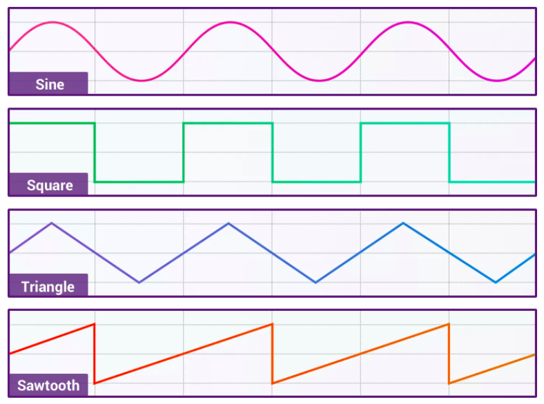
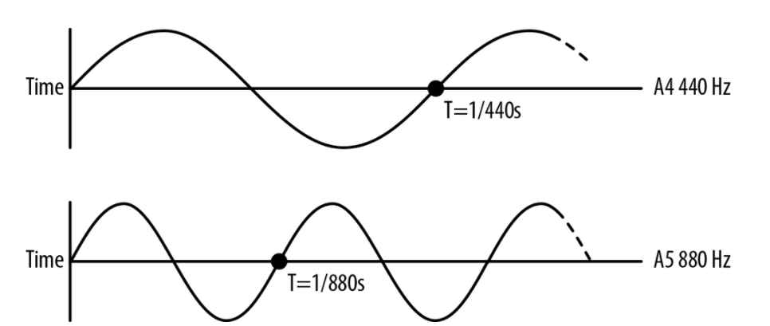
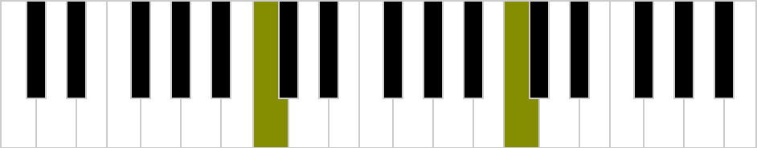
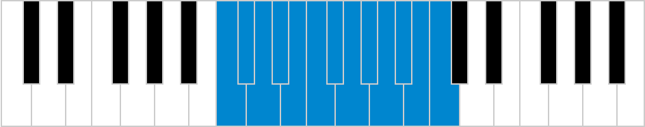
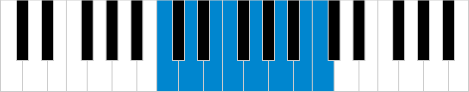
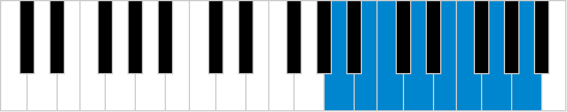

Exploring Music Theory in Your Browser
Sharell Bryant
Work

Play

Work + Play?

Web Audio API
JavaScript API in your browser for processing, synthesizing, and analysing audio
const audioContext = new (
window.AudioContext || window.webkitAudioContext
);
Web Audio API

Audio graph with modular routing
Audio Sources
HTML Media elements
WebRTC MediaStream
JS synthesized audio
What is Sound?
It's a wave
Sound is a pressure wave

Oscillation of air molecules
Creating sound with Web Audio API
Oscillator Node
let oscillator = audioContext.createOscillator();
let gainNode = audioContext.createGain();
oscillator.connect(gainNode);
gainNode.connect(audioContext.destination);
Oscillator Types
Sine
Square
Sawtooth
Triangle
Scales are the building blocks for music
What's a scale?
A set of musical notes ordered by pitch
Allows you to build melodies and harmonies
Each scale evokes a different mood
Frequency
Determines the note or the pitch
Measure how many times the waveform repeats in a given amount of time
Usually measured in Hz (reps per second)
Octave
Interval between one note and a note double or half its frequency
Octave
Octave equivalency means that they are named the same note
Chromatic scale
An octave is divided into 12 semitones
Each note on the piano is a semitone apart
Equal ratio between notes is 2(1/12)
Chromatic scale
function computeSemitones(rootNote) {
let currentNote = rootNote;
let semitones = [];
for(let i=0; i<=12; i++) {
semitones.push(currentNote);
currentNote *= Math.pow(2, 1/12);
}
return semitones;
}
Major Diatonic scale
W W H W W W H
C D E F G A B C
Diatonic scales have 5 whole tones
Minor Diatonic scale
W H W W H W W
A B C D E F G A
Relative minor is 3 semitones below major root note
const scalePatterns = {
majorDiatonic: [0,2,4,5,7,9,11,12],
minorDiatonic: [0,2,3,5,7,8,10,12]
};
function computeScale(rootNote, pattern) {
const semitones = this.computeSemitones(rootNote);
return scalePatterns[pattern].map(scalePosition =>
semitones[scalePosition]
);
}
Resources

Chat with me about:
Web audio, music, or what we do at Teachers Pay Teachers!
@shrell